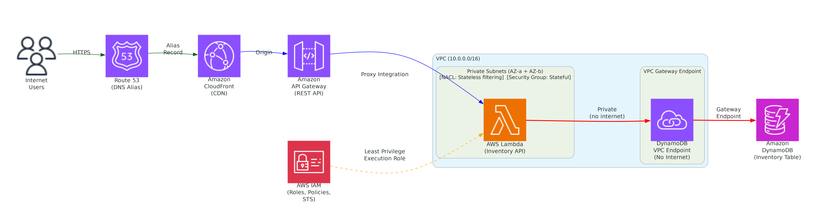
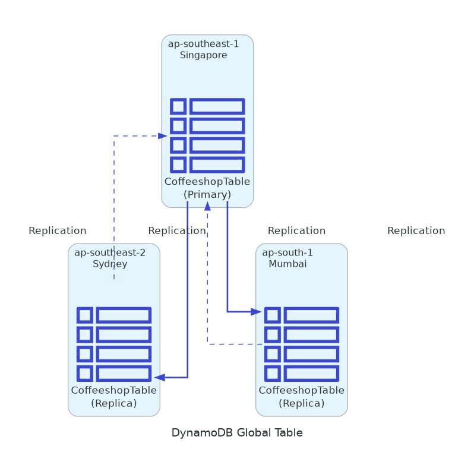

CoffeeShop Singapore

Multi-AZ deployment in Singapore (ap-southeast-1) featuring Application Load Balancer distributing traffic across three availability zones, mixed instance types (on-demand and spot), and RDS Multi-AZ for high availability database operations.
CoffeeShop Sydney

Australia East (ap-southeast-2) regional deployment showcasing resilient architecture across three availability zones with Application Load Balancer, Auto Scaling Groups, mixed instance types for cost optimization, and RDS Multi-AZ configuration.
CoffeeShop Mumbai

Asia Pacific Mumbai (ap-south-1) deployment demonstrating multi-AZ resilience with Application Load Balancer managing traffic distribution, Auto Scaling capabilities for dynamic workloads, and highly available RDS Multi-AZ database setup.
Route 53 Routing Architecture

Comprehensive DNS routing solution using Amazon Route 53 with multiple routing policies including geolocation for regional targeting, latency-based routing for performance optimization, failover routing for disaster recovery, and weighted routing for A/B testing scenarios.
Global Accelerator

Virtual Private Cloud

Foundational VPC architecture demonstrating network segmentation with public and private subnets, Internet Gateway for public connectivity, NAT Gateway for secure outbound access from private resources, and proper routing table configurations for network isolation and security.
VPC Peering

Inter-region VPC Peering connections enabling secure, direct network connectivity between VPCs across Singapore, Sydney, and Mumbai regions, facilitating cross-region communication without traversing the public internet while maintaining network isolation.
CI/CD Pipeline

Serverless Architecture

Comprehensive serverless solution utilizing API Gateway for RESTful APIs, AWS Lambda for compute functions, DynamoDB for NoSQL data storage, S3 for static content hosting, CloudFront for global content delivery, with SNS and SQS for decoupled messaging patterns.
The CoffeeShop Architecture

Complete CoffeeShop application architecture demonstrating modern cloud-native patterns with containerized microservices, managed databases, content delivery networks, and integrated monitoring and logging solutions for production-ready applications.
Amazon Aurora Global Database

Amazon Aurora Global Database implementation providing cross-region disaster recovery and low-latency global reads with primary region writes replicating to secondary regions within seconds, enabling globally distributed applications with local read performance.
Amazon SQS

Interactive demonstration of Amazon Simple Queue Service (SQS) featuring Standard and FIFO queues, Dead Letter Queue (DLQ) configuration, message visibility timeout behavior, CloudWatch alarms integration, and proper message handling patterns for decoupled application architectures.
AWS X-Ray and Microservices

Distributed tracing implementation using AWS X-Ray for microservices observability, providing end-to-end request tracking, performance bottleneck identification, and service dependency mapping across complex distributed application architectures.
Serverless Microservice (Private Networking)

Fully serverless inventory API demonstrating VPC private networking with Lambda in private subnets, VPC Gateway Endpoint for DynamoDB access without internet, API Gateway REST API, CloudFront CDN, Security Groups, NACLs, and IAM least-privilege roles.
CloudFront CDN

Amazon CloudFront content delivery network configuration optimizing global performance by serving static assets from S3 origins and dynamic content through Application Load Balancer origins, with edge caching reducing latency worldwide.
WAF Security

AWS Key Management Service

AWS Key Management Service (KMS) implementation showcasing encryption and decryption operations with customer-managed keys, demonstrating key policies, IAM permissions, and secure data protection patterns for compliance and data sovereignty requirements.
AWS CloudFormation

CloudFormation Nested Stacks

Advanced CloudFormation architecture using nested stacks for modular infrastructure deployment, separating concerns across VPC, compute, and networking layers while maintaining dependencies and enabling reusable, maintainable infrastructure templates.
DynamoDB Global Table Monitor

DynamoDB Global Table (CoffeeshopTable) replicated across Singapore, Sydney, and Mumbai regions with active-active multi-region writes. Monitor replication latency, validate cross-region consistency, and test read/write operations across all replicas in real-time.
Amazon Data Lifecycle Manager

Automate the creation, retention, copy and deletion of snapshots and AMIs. Amazon Data Lifecycle Manager provides a simple, automated way to back up data stored on Amazon EBS volumes.
Amazon FSx and Microsoft AD

Enterprise Windows environment featuring Amazon FSx for Windows File Server integrated with AWS Managed Microsoft Active Directory, providing high-performance, fully managed shared storage with native Windows features and seamless domain integration.
Amazon Elastic File System

Amazon Elastic File System (EFS) implementation providing scalable, shared NFS storage accessible across multiple EC2 instances and availability zones, demonstrating concurrent access patterns and automatic scaling capabilities for distributed workloads.